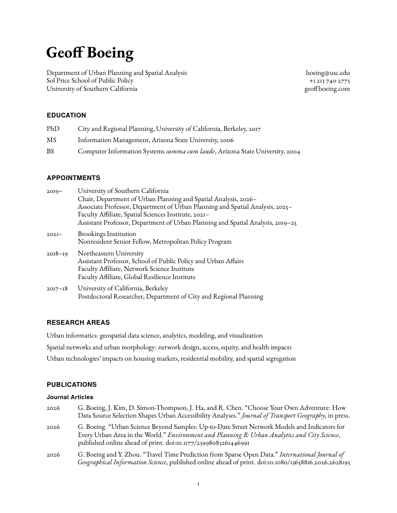
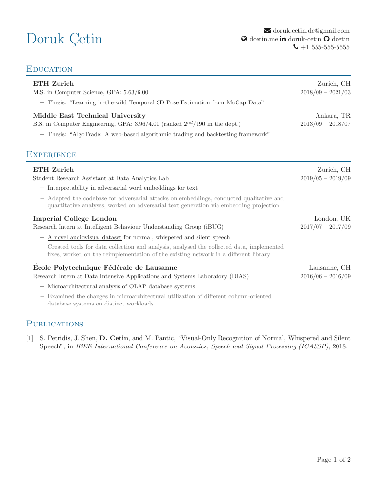
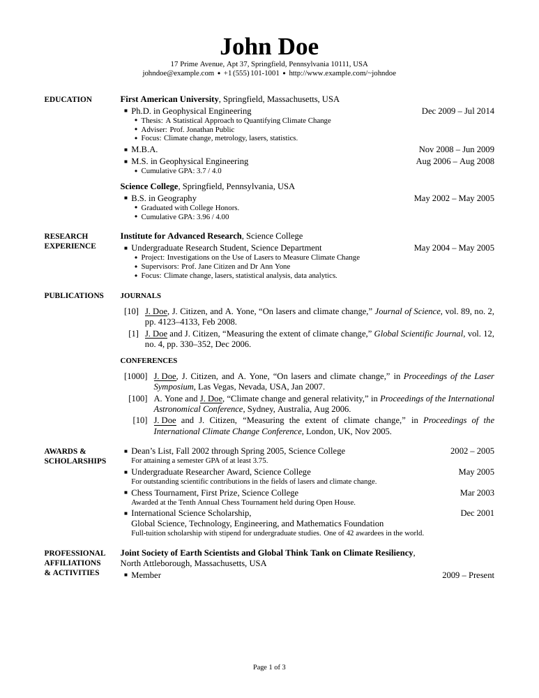
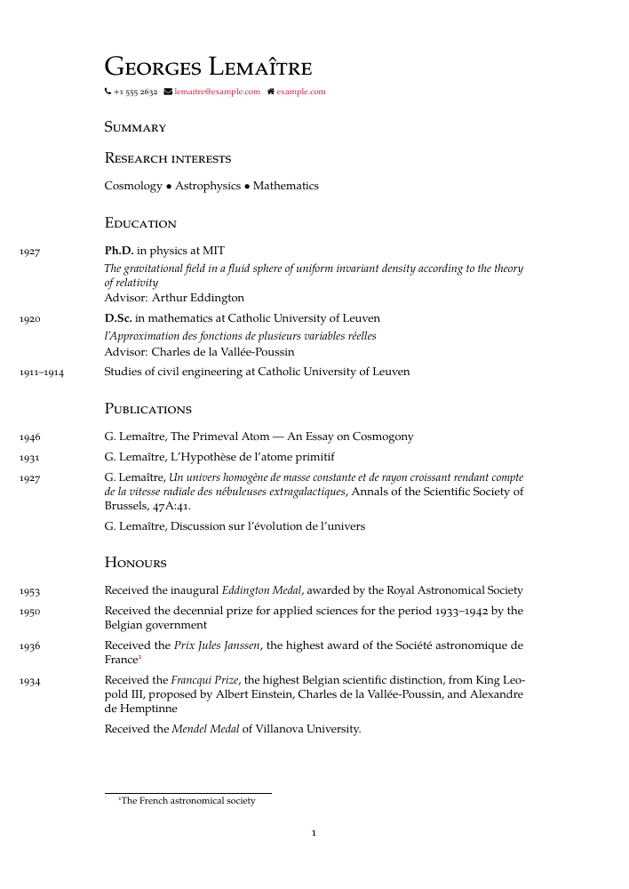
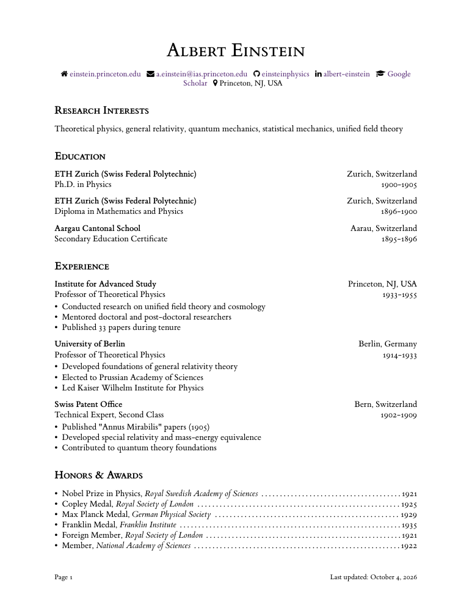
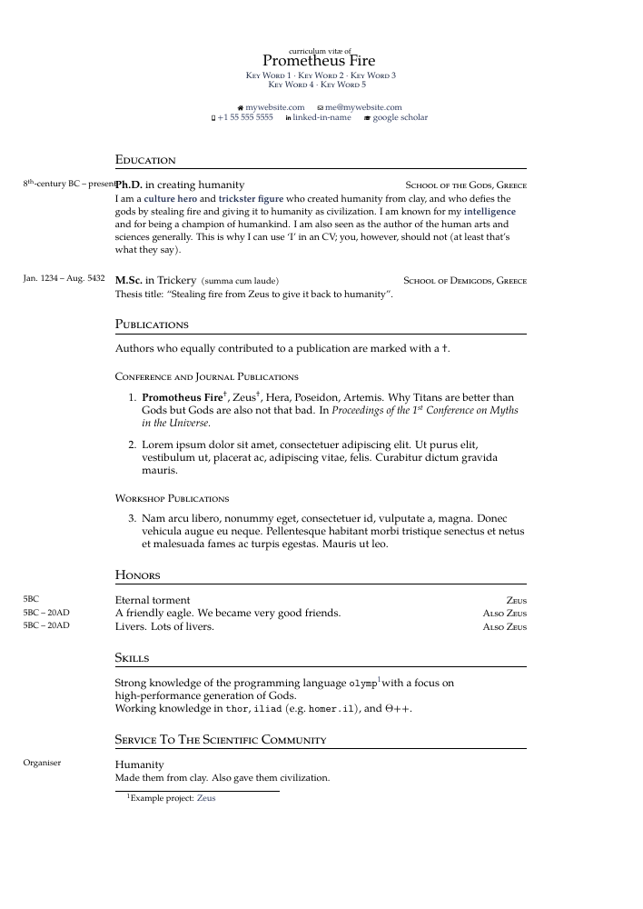
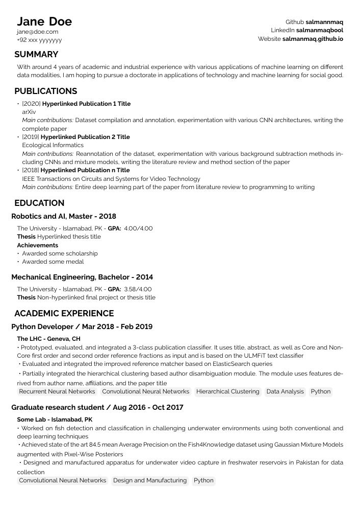
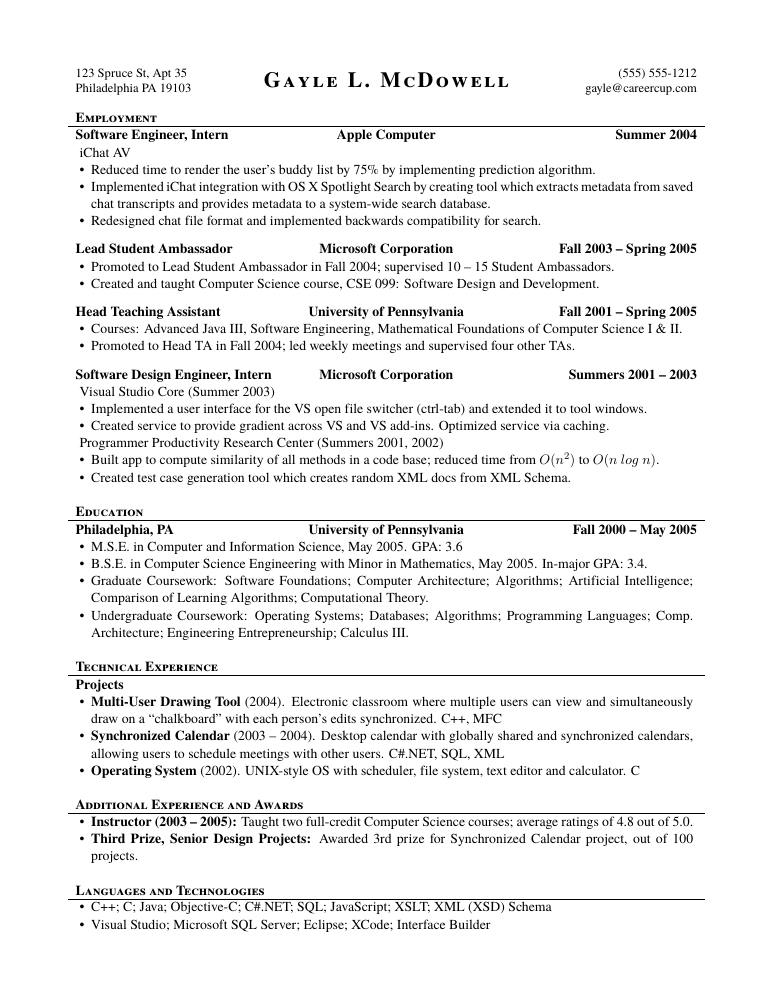
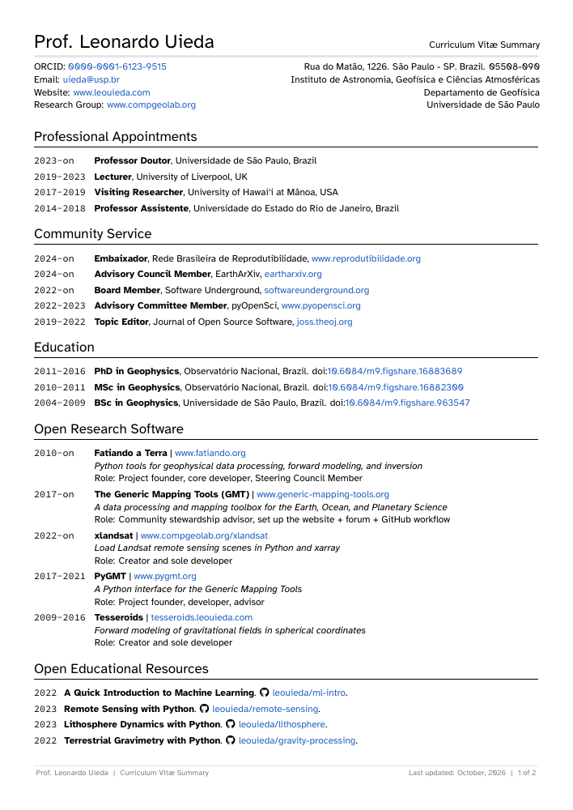
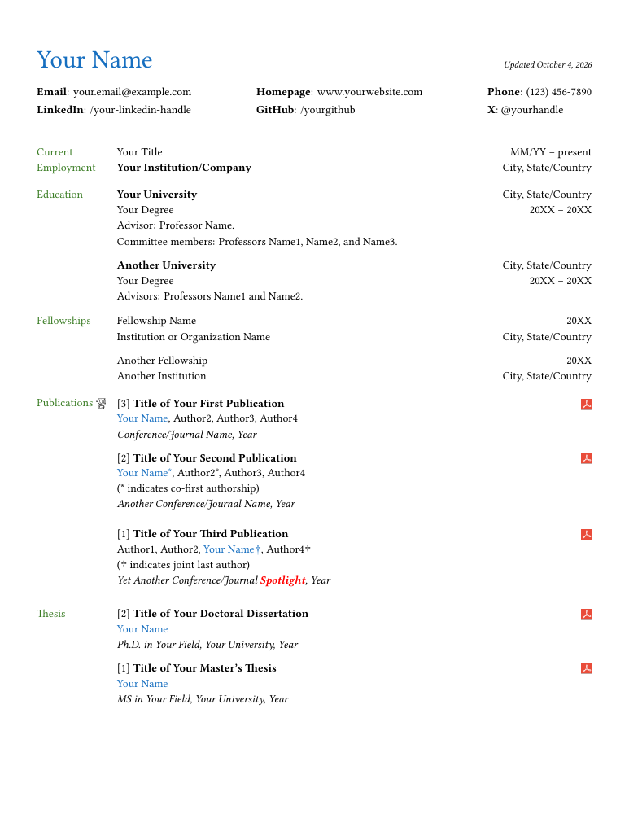

Boeing academic CV
Traditional single-column academic CV; understated rules and comprehensive scholarly sections.
MIT · pdflatexTen additional, licensed LaTeX templates. Previews use upstream sample content. Select a PDF to inspect its full layout; use the source link for attribution and documentation.

Traditional single-column academic CV; understated rules and comprehensive scholarly sections.
MIT · pdflatex
Minimal sectioned CV with BibLaTeX publications and modular content files.
MIT · pdflatex
Monochrome academic CV with a narrow date column and bundled fonts.
Unlicense · xelatex
Restrained typography and an academic publication list.
MIT · lualatexUse free TeX Gyre fonts instead of requiring Adobe Minion Pro, Cabin and Fira Mono; separate the sample's adjacent education entries.

Modular, minimal academic CV with bibliography support and clear section hierarchy.
MIT · pdflatex
Research-focused modular layout with separate education, service and publications files.
MIT · xelatexCompile fontspec with XeLaTeX and substitute the free TeX Gyre Pagella family for separately installed Cormorant fonts.

Compact graduate-application layout with academic sections and a dedicated class.
MIT · pdflatexRestore the Raleway font switch and provide a minimal monochrome variant: plain headings, hidden link borders, neutral skill tags, and a spaced name.

Black-and-white serif layout; a compact option for an academic/industry crossover CV.
MIT · lualatexUse LuaLaTeX for microtype letterspacing and the free TeX Gyre Termes equivalent of Times New Roman.

Long-form academic CV with a clean single-column structure and strong scholarly hierarchy.
BSD-3-Clause · xelatex
Academic section structure with restrained color and compact dated entries.
MIT · xelatex